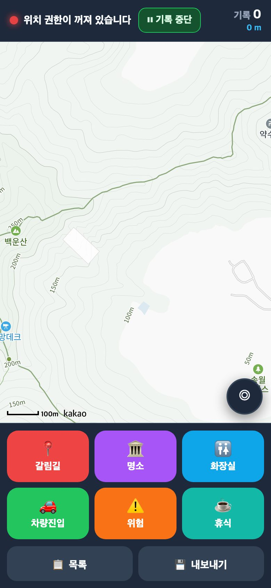
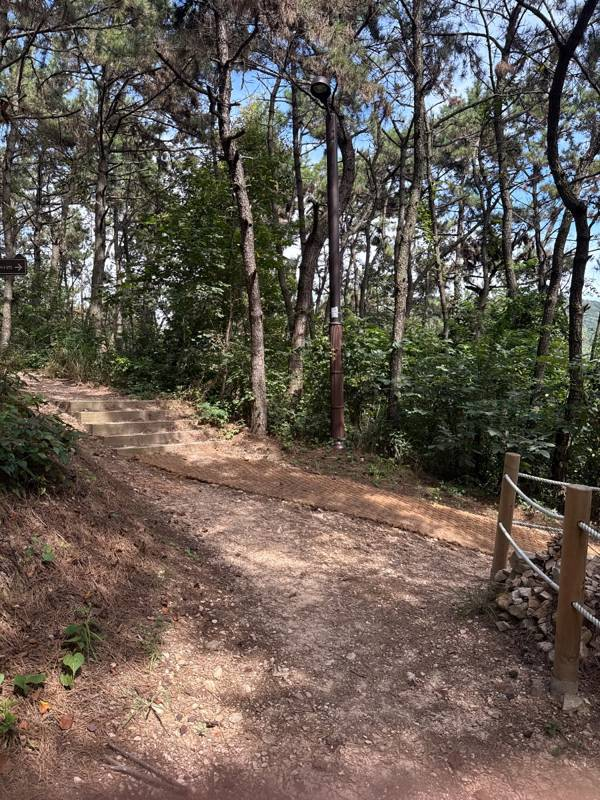
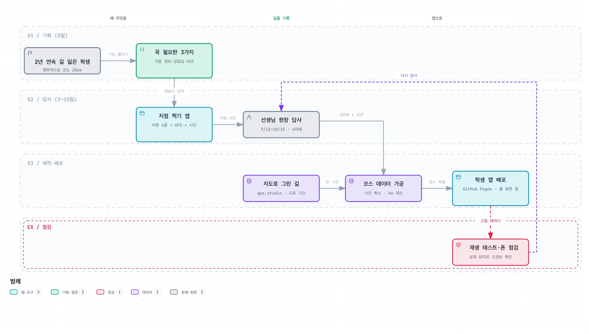
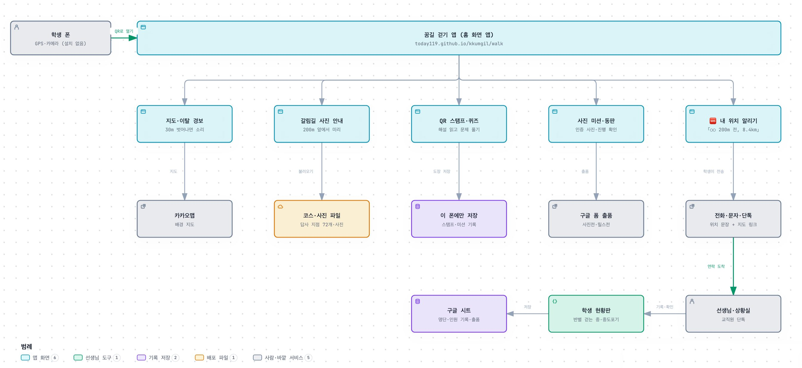
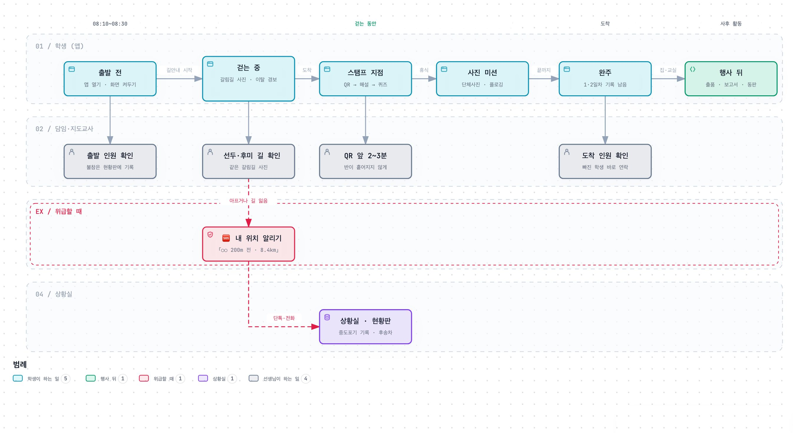
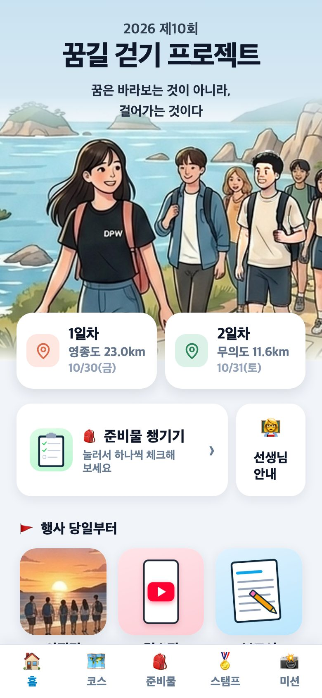
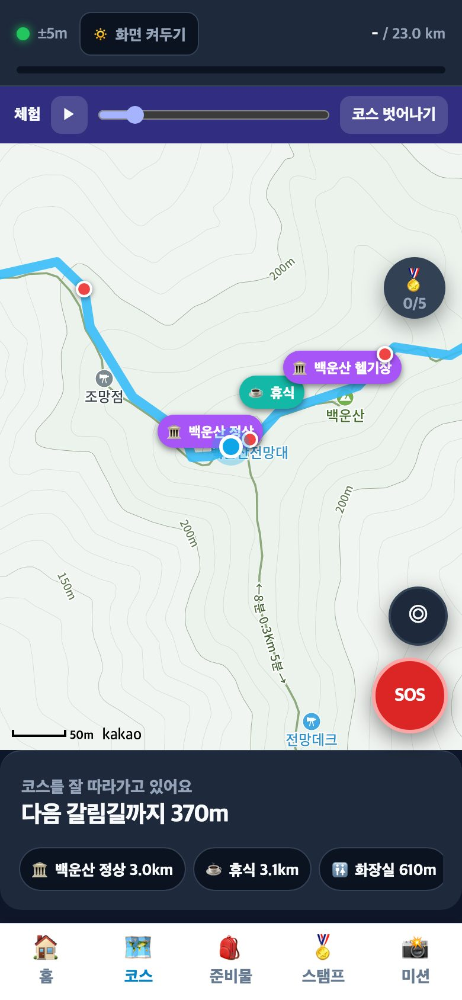
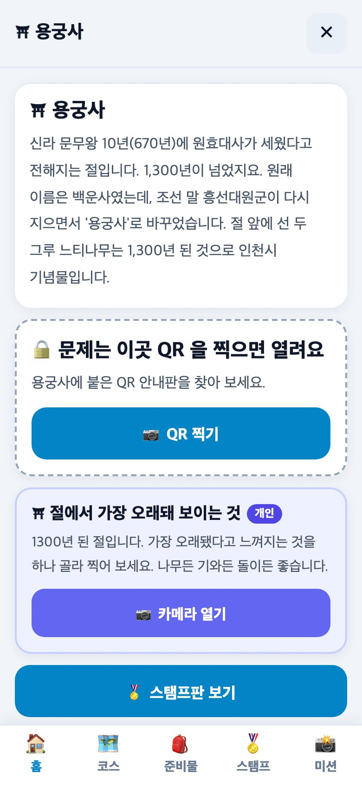

1왜 만들었나
2026년 8월, “학생들에게 내비게이션 앱을 주면 어떨까?”에서 시작했습니다. 4년 동안 행사를 운영하며 쌓인 문제는 네 가지였습니다.
재작년과 작년 모두 학생이 길을 잃고 반과 떨어진 일이 있었습니다. 가장 먼저 풀어야 할 문제입니다.
앞으로 얼마나 남았는지, 점심·간식은 어디인지 모른 채 앞사람만 따라 걷습니다.
계획서 목적 1번이 영종도 역사·문화 체험인데, 용궁사도 영종진도 안내 없이 지나갑니다.
사진전·릴스전·미션처럼 걸으면서 하는 활동을 묶어 줄 도구가 없었습니다.
2무엇을 넣고, 무엇을 뺐나
상의할수록 아이디어가 계속 늘어났습니다. 그래서 기준을 하나 세웠습니다.
✅ 꼭 넣은 것 — 안전 3가지
- 1코스 이탈 경보 — 코스에서 30m 벗어나면 소리
- 2갈림길 사전 안내 — 200m 앞에서 답사 사진을 미리
- 3🆘 내 위치 알리기 — “○○ 200m 전, 코스 8.4km 지점”을 문장으로
- +화장실·휴식·점심 위치, 스탬프(해설+퀴즈), 사진 미션은 그다음
✋ 뺀 것과 이유
- 보물찾기 — 당일 아침 25km를 돌며 숨겨야 해서 운영 부담이 더 큼
- 학급 순위 — 순위가 보이면 서두르고, 걷기 행사에선 그 자체가 위험
- 학생 댓글 — 걸으며 쓰면 위험, 교실에서 함께 읽는 편이 효과 비슷
- 로그인·서버 — 로그인이 안 되면 안전 기능까지 막힘. 안전 기능은 로그인 없이
3시작은 「지점 찍기」 답사 앱
학생 앱보다 먼저 만든 것은 선생님이 답사할 때 쓰는 작은 앱입니다. 갈림길 안내를 하려면 갈림길이 어디인지, 어떻게 생겼는지부터 알아야 하니까요. 재료가 먼저입니다.
이렇게 씁니다
- 기록은 버튼을 누를 때만 합니다. 8시간 연속 GPS 기록은 배터리가 버티지 못해서, 전체 경로는 등산 앱(램블러)에 맡겼습니다.
- 지도가 안 떠도 기록은 됩니다. 산속에서 지도가 늦게 떠도 답사가 헛수고가 되지 않게 했습니다.
- 9/11 첫 답사: 1시간 49분, 5.8km, 지점 38개, GPS 오차는 모두 ±2~5m였습니다.

지점 찍기 앱버튼 6개가 전부

백운산 갈림길 사진육안으로 구분이 안 될 만큼 닮은 갈림길이 10곳 넘게 이어집니다
답사에서 확인한 것: 백운산 갈림길(06~17번)은 사진으로 봐도 서로 거의 같습니다. “GPS가 알아서 지금 갈림길을 띄워 주는 것”이 꼭 필요하다는 것을 현장이 보여 줬습니다.
4만든 과정 — 답사 기록이 앱이 되기까지
기획 → 답사 → 가공 → 배포 → 점검을 한 번에 끝낸 것이 아니라, 고칠 곳이 보이면 다시 걷는 방식으로 여러 번 돌았습니다.

단계마다 한 일
답사 → 코스 파일
- 사진 장당 약 517KB → 100KB로 줄이기 (학생 280명이 데이터로 받음)
- 각 지점이 코스 몇 km인지 자동 계산
- 도로 구간은 지도(gpx.studio)로 그려 답사 구간 사이를 이음
설치 없는 홈 화면 앱
- 앱스토어 없이 QR → 주소 → 「홈 화면에 추가」
- GitHub Pages 정적 웹 = 서버·로그인·서버비 없음
- 앱은 개인정보를 저장하지 않음
실제 GPS로 다시 걸어 보기
- 답사 때 길을 지나친 기록을 그대로 재생 → 1분 만에 이탈 경보, 오경보 0
- 아이폰 홈 화면 앱 깜빡임·느린 화면 수정
- 스탬프 GPS 열기가 어긋나 QR 방식으로 바꿈
타임라인
문제 4가지 정리, “걸으며 폰을 더 보게 되나?” 기준, 안전 3가지로 범위 확정. 구글 폼·시트와 역할 나누기.
지점 38개·사진 44장. 같은 날 갈림길 사진의 방향 표시 방식을 정함.
이탈 경보·갈림길 안내·체험 모드. 실제 답사 GPS 1,034점을 재생해 검증.
준비물·일정표, 공모전 결과, 선생님 현황판(인원 기록)까지.
5앱의 구조 — 무엇이 어디에 있나
학생 폰 안에서 거의 모든 일이 끝납니다. 위치는 폰 안에서만 계산하고, 사진과 기록도 학생 폰에 남습니다. 학교 밖으로 나가는 것은 학생이 직접 보내는 연락과 출품뿐입니다.

위치는 폰 안에서만 계산합니다. 학생 위치를 서버로 보내지 않습니다.
안전 기능(지도·경보·갈림길·내 위치)은 로그인 없이 돕니다.
인원 기록·출품은 학교 구글(폼·시트) 안에서만 오갑니다.
6행사 당일, 이렇게 쓰이기를 바랍니다
앱은 선생님을 대신하지 않습니다. 선생님이 보는 같은 갈림길 사진을 학생도 보고, 위급할 때 학생이 자기 위치를 한 문장으로 말할 수 있게 돕는 도구입니다.


① 홈1·2일차 카드, 준비물, 선생님 안내

② 걷는 중“다음 갈림길까지 370m”, 오른쪽 아래 SOS

③ 스탬프해설을 읽고, QR을 찍으면 퀴즈가 열림
④ (선생님) 지점 찍기코스가 바뀌면 이 앱으로 다시 걸으면 됨
누가 무엇을
🎒 학생
- 출발 전 앱 열기 → 「화면 켜두기」 → ▶ 길안내 시작
- 폰은 주머니에. 소리가 나면 그때 화면 보기
- 스탬프는 앱 안 「📷 QR 찍기」로 (기본 카메라 ✕)
- 아프거나 길을 잃으면 그 자리에 멈추고 🆘 → 화면의 문장을 그대로 전달
- 행사 뒤 사진전·릴스전 출품, 완주보고서
👩🏫 담임·지도교사
- 출발 전 반 학생 폰에서 앱이 열리는지 확인
- 불참·중도포기·다시 합류는 현황판 이름 버튼으로
- 선두·후미는 같은 앱 화면으로 갈림길 확인
- QR 스탬프 앞에서 2~3분만 기다려 주기
- 도착하면 인원 확인, 빠진 학생은 바로 연락
📋 상황실
- 현황판으로 반별 걷는 중·중도포기 인원 보기
- 단톡·전화로 온 위치 문장(“○○ 200m 전, 8.4km”)과 지도 링크로 후송차 보내기
- “움직이지 말고 기다려” 안내 — 이동하면 못 찾음
7만들면서 배운 점
다른 행사나 수업에서 앱·디지털 도구를 만들 때도 그대로 쓸 수 있는 것들입니다.
“산과 섬은 통신이 안 될 것”이라는 예상은 틀렸습니다. 4년 동안 걸어 본 선생님의 말이 맞았고, 덕분에 복잡한 오프라인 설계를 덜어냈습니다.
앱의 핵심 내용(갈림길 사진)은 선생님이 걸으며 모은 기록입니다. 지점 찍기 앱을 먼저 만든 것이 가장 잘한 결정이었습니다.
“걸으며 폰을 더 보게 되나?” 하나로 계속 늘어나던 아이디어를 안전 3가지로 줄였습니다.
보안을 꼼꼼히 챙긴 현황판이 “로그인이 어렵다”는 이유로 쓰이지 않을 뻔했습니다. 설명이 한 줄로 끝나도록 다시 만들었습니다.
컴퓨터에서는 멀쩡하던 화면이 아이폰 홈 화면 앱에서 깜빡였습니다. 답사 GPS를 다시 재생해 보는 시험이 가장 믿을 만했습니다.
올해 학생들의 사진전·릴스전 작품이 내년 앱의 명소 사진이 됩니다. 후배가 선배의 사진을 보며 같은 길을 걷게 됩니다.
링크 모음
- 🚶 학생 앱 — today119.github.io/kkumgil/walk (체험: 길안내 체험 모드)
- 📍 지점 찍기 답사 앱 — today119.github.io/kkumgil/survey
- 👩🏫 선생님 안내(당일 행동요령·배치·응급 대처) — today119.github.io/kkumgil/guide